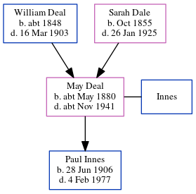

Emily Ellen Deal (née Kenton) 1875 - c1942
[ Home ] | [ Calendar ] | [ Surnames Index ] | [ Errors ] | [ Family History ]Emily Kenton, the wife of Austin Alfred Deal (the first cousin twice-removed on the father's side of Nigel Horne), was born in Preston, Kent, England on 16 Mar 18751,2 and married Austin (a cemetery caretaker with whom she had 3 children: Eardley, William Richard and Hilda Mary) at St George's Church, Ramsgate, Kent, England on 19 Jan 19014.
During her life, she was living at 6 Dane Park Road in Ramsgate on 31 Mar 19015; and at Cemetery Lodge, Chartham, Kent on 29 Sept 19391.
She died c. May 1942 in Bridge, Kent, England3.
Children
- Eardley was born on 25 Mar 1902
- William Richard was born on 10 Sept 1904
- Hilda Mary was born on 28 Sept 1906
Citations
- 1939 Register - Findmypast (was recorded at this address)
- England Marriages 1538-1973 - Findmypast
- England & Wales deaths 1837-2007 - Findmypast
- England & Wales marriages 1837-2008 - Findmypast
- 1901 England, Wales & Scotland Census - Findmypast (was age 25 and the wife of the head of the household)
Media
England & Wales births 1837-2006 - BMD/B/1875/2/AZ/000319/097
England & Wales deaths 1837-2007 - BMD/D/1942/2/AZ/000225/049
1939 Register - TNA/R39/1803/1803E/026/27
England Marriages 1538-1973 - R_848242216/2
Family Tree
Map
Generated by ged2site. Last updated on Jul 3, 2024
Known Issues
No records of living with anyone